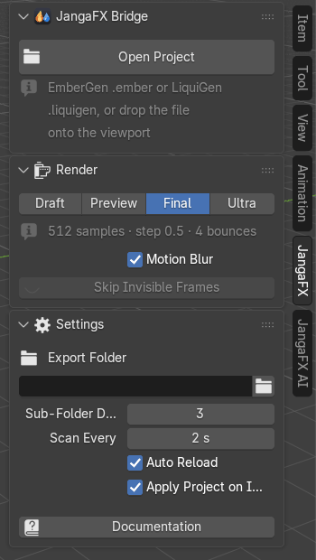
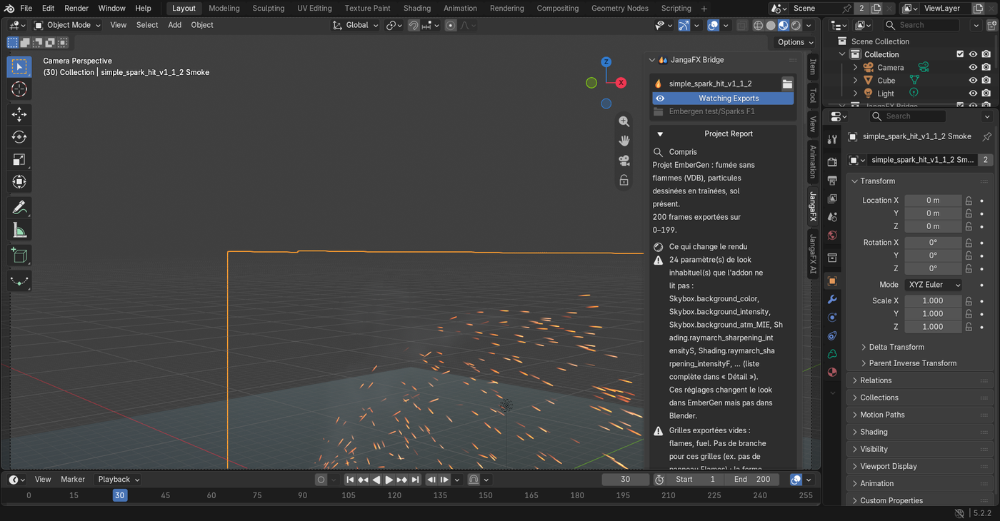
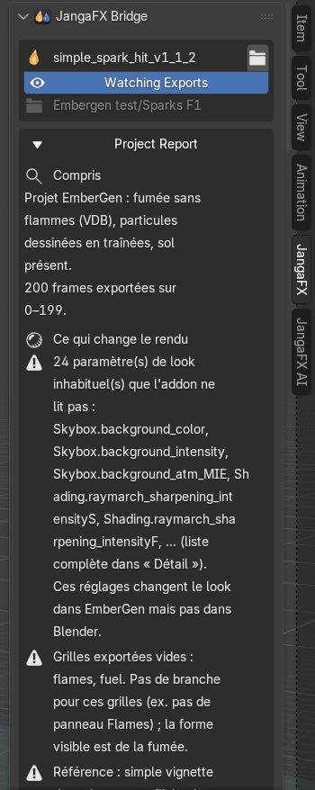
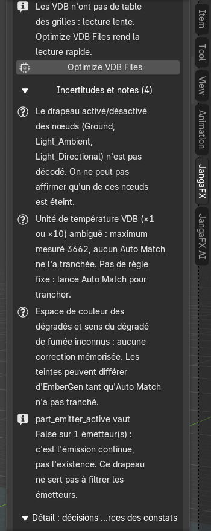

Getting started
Before you begin: export your effect from EmberGen (VDB for smoke and fire, Alembic for
particles) or from LiquiGen, and save the project (.ember or .liquigen).
Open the JangaFX panel
In the 3D viewport, press N: the sidebar opens. Click the JangaFX tab (on the right edge of the panel). As long as no project is open, it only shows the Open Project button, the Render section and the Settings section (collapsed).


Open an EmberGen or LiquiGen project
- Click Open Project.
- Choose the
.ember(EmberGen) or.liquigen(LiquiGen) file.
You can also drag the project file from the file explorer straight into the 3D viewport.
The add-on reads the project, finds the exports through the project's export nodes, imports them and sets up everything else automatically: materials, lights, camera, post-processing, frame rate (frames per second) and the scene's frame range. A heavy project can take a few seconds.
If nothing is found, Blender shows "No export of this project was found on disk (export it from EmberGen first)": export from EmberGen or LiquiGen first.
What appears in the scene
After opening, the scene contains:
- a JangaFX Bridge collection with the effect: the volume (smoke, fire) and, if there are any, the sparks or the liquid;
- the project's camera (if Camera is enabled in Project scene), the project's ground and its lights (EmberGen's sun, for example);
- the scene's frame range set to match the export's.


To view the render in the 3D viewport, switch to the Material Preview or Rendered shading mode (top right of the 3D viewport). The final render is done with Cycles.
The exports folder
On opening, the add-on takes as the exports folder the folder where the project's export nodes write their files (the project folder if it finds none); it is shown under the project name. The Watching Exports button (eye) shows that this folder is watched: when you re-export from EmberGen, the list updates and the effects already imported are reloaded (if Auto Reload is ticked).
To watch another folder, open the Settings section and change Export Folder (see Settings).
The project report
Just under the project name, the Project Report explains what the add-on understood and what may make the
result different from EmberGen. It is written in the language chosen in the add-on preferences (French by
default). A text copy is also written next to the project (<project>.jfxb_report.txt).


It is split into parts:
- Understood: what the project contains (smoke, flames, particles, ground, number of exported frames).
- Affects the render: the points that make Blender's render differ from EmberGen's, most serious first. The icon shows the severity (red cross: problem; triangle: warning). When a fix exists, a button appears right below (for example Optimize VDB Files or Auto Match to EmberGen). If all is well, the line says "Nothing found".
- Uncertain and notes (collapsed): what the add-on could not settle, and plain information.
- Detail: plan decisions and sources of findings (collapsed): each decision made at opening, with where the value comes from. Useful for understanding, not needed day to day.


Click the Project Report title to collapse the report: a single line remains, with the number of findings by severity.
What's next
- Discover each section of the panel: The JangaFX panel.
- Compare your render with EmberGen's: Check and Auto Match.
- Put the effect in another scene: Export the effect to .blend.